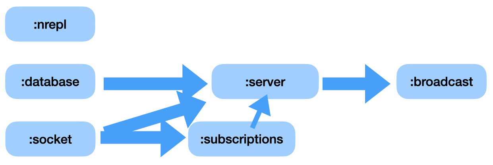

bh.rccst.core
-main
(-main & args)last-req
last-req is uses to grab the most recent request made by a client so we can explore at the repl
new-system
(new-system args _)Constructs a system-map, per Stuart Sierra Component. This brings together all the various ‘stateful’ Components of the system:
| component | description |
|---|---|
| Database | durable SQL storage |
| Web Server | handling URL Endpoints |
| Socket Server | data Pub/Sub |
| nRepl | providing a remote Repl for interactive development |
| Broadcast | a timer-based publication mechanism (temporary) |
| Subscription | mechanism for managing Client subscriptions to data-sources |
These Components form a Directed Acyclic Graph (DAG) based upon their interdependencies. 
- args - (hash-map) configuration items for the various Components, expects the following keys:
| keyword | type | description |
|---|---|---|
| :host | string | DNS name for the Web Server, defaults to localhost |
| :port | integer | TCP port number for the Web Server, defaults to 8280 |
| :nrepl | integer | TCP port for the embedded nREPL, defaults to 7777 |
| :dev-mode | boolean | true or false. If true we start without CSRF anti-forgery. Use this when you want to do development and have the /api-docs/ (Swagger-UI) page support POST and PUT endpoint examples. |
| :bh.rccst.components.database-spec | hash-map | database configuration information. Two are currently provided: |
rccst-postgres - configuration for a locally hosted Postgres database. | ||
rccst-sqlite - configuration for a locally hosted SQLite database. | ||
| :socket-params | hash-map | configuration parameters for the Sente-based websocket. Expected keys are: |
:client-fn - function to extract the client-id from the incoming HTTP request | ||
:packer - function to marshall data into /out-of the socket. We currently are using Transit, hence (sente-transit/get-transit-packer) | ||
:csfr-token-fn - function to return the CSRF, if using CSRF Anti-forgery, nil of not. | ||
| :broadcast-timeout | integer | number of seconds between ‘publish’ events, defaults to 5 seconds. |
See also:
rccst-postgres
postgresql database connection spec.
rccst-sqlite
sqlite database connection spec.
start!
(start! db-type)Starts the system, defined by (new-system). Presumes a production-type environment, so it will use CSRF tokens.
Note: the
/api-docs/(Swagger-UI) does NOT support CSRf onPOSTorPOSTendpoints!If you want to work with the complete API using
/api-docs/, you will need to start the server manually at the Repl, so you can access dev-mode (See the Rich Comments).
- db-type - which database server to use, we support 2: Postgres via rccst-postgres and Sqlite via rccts-sqlite.
returns: an atom holding the started SystemMap object returned from Component.
See also: